|
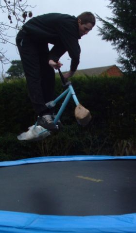 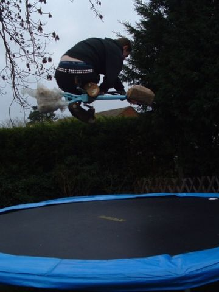 simon bamber came to our house to play while i am jobless. first we played on the trampoline. it was the first time it had been dry for about a month so i was looking forward to it. simon was a little hesitant as he doesn't like them apparently, but he soon got the hang of it as you can see. two staple trails tricks. 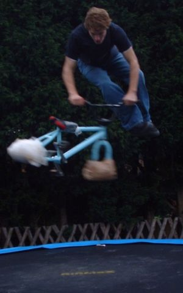 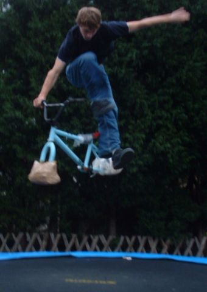 tim has been trying tailwhips and one handed two foot cans. he can land one hand two foot cans. 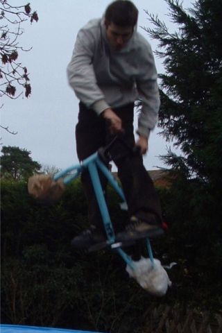 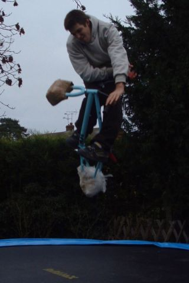 i have been working on the downs tricks. turndown and unturndown. i have also been trying indowns and half turned turndowns, if they have a name? 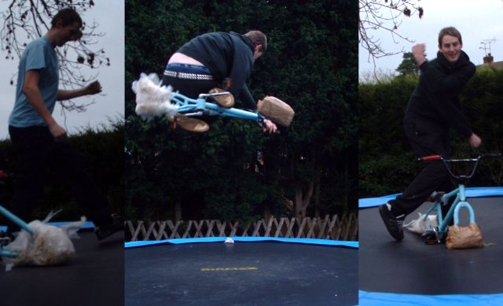 a nice little montage of simon. 1. cleaning his dirty shoes, 2. an even better tabletop, 3. ? below, another xup and two foot can attempt. 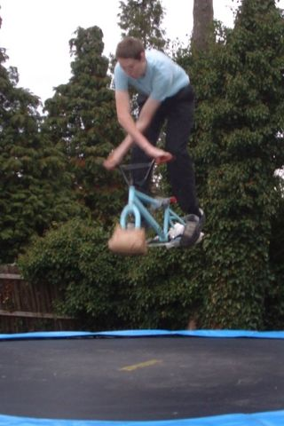 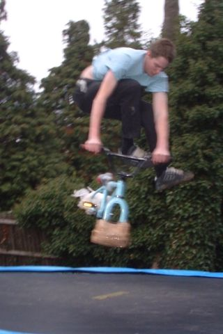 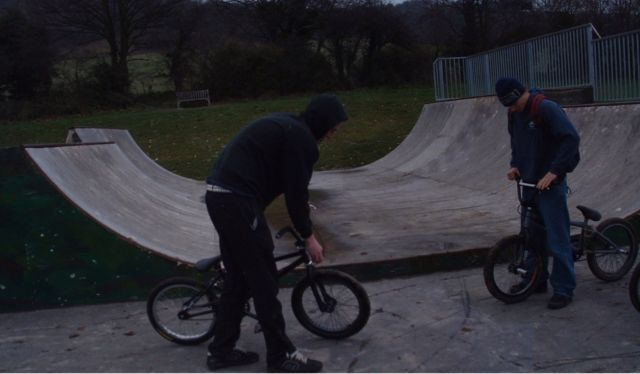 next stop was burham. (not burNham) we got lost again. we always get lost going here. it was too wet though and i got woodburns all over my arm. ouch. so instead we went to whatman park in maidstone (not maidENHEAD). but to be honest i don't care what you call it. 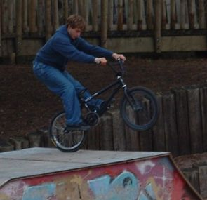 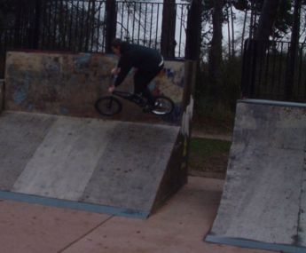 this is the first time it had been dry in about a month apparently so that was good. there are lots of lines, but a lot of it is flatbanks and skater stuff. the box is ok though. above: tim doing that trick i don't know the name of on simon's lovely new light bike, and simon on the easiest gap jump there. i thought this gap would be much harder than it is. below: a
lovely atmosphere/dig/fag shot simon told me to take. it looks pretty
chilly to me. 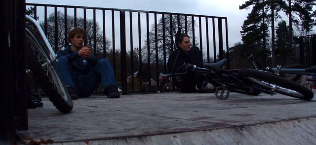 a pair of flatties from horsley's finest tabletopper. after this we had to go home so tim could go to college. simon fixed my pc and we had lunch and looked at the trails and then he went home and i did a few hours of digging. a fun day. should this go in old news or in pictures section? vote on the guestbook. go. 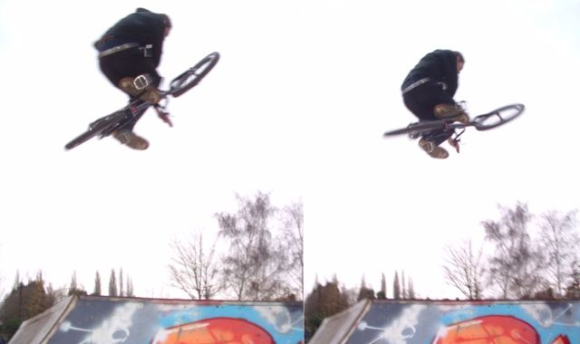 |